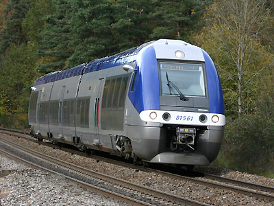
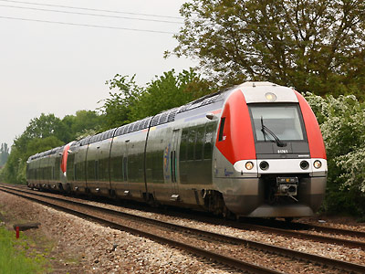
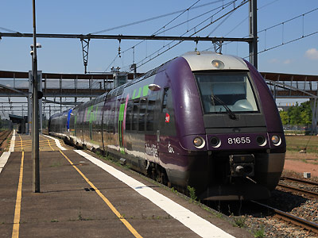
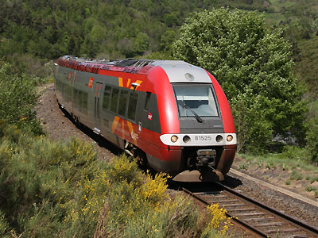
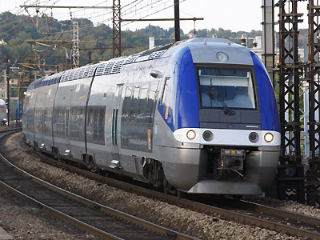
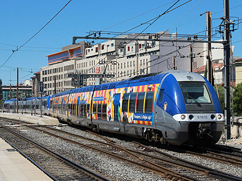
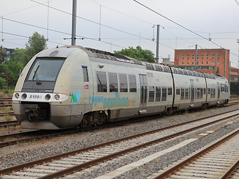

B 81500
BGC
Autorails Bimode Diésel / Electrique 1,5kV continu. Ils font partie de la famille des AGC.
Quelques données techniques
Constructeur : Bombardier
Pour plus d'info :
La fiche B 81500 sur Wikipedia
L'inventaire des B 81500 sur Trains du Sud-Ouest

BGC 81853/64 Midi-Pyrénées à Toulouse (09/01/2015)

Le B 81561/62 dans les Sauvages (02/11/2005)

Le B 81761/62 Bourgogne à Laroche Migennes (13/05/2010)

Le B 81655/56 Rhône Alpes à Bourges (25/05/2012)

Le B 81525/26 Languedoc Roussillon à Bouchâtel (20/05/2009)

Le B 81638/37 PACA arrive à Nîmes (26/04/2008)

Le B 81615/16 PACA quitte Marseille St Charles (24/05/2014)

Le B 81593/94 Aquitaine à Agen (25/05/2015)